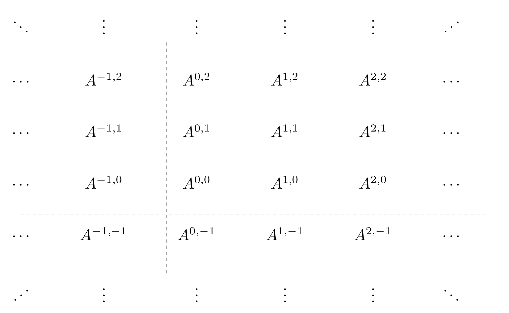
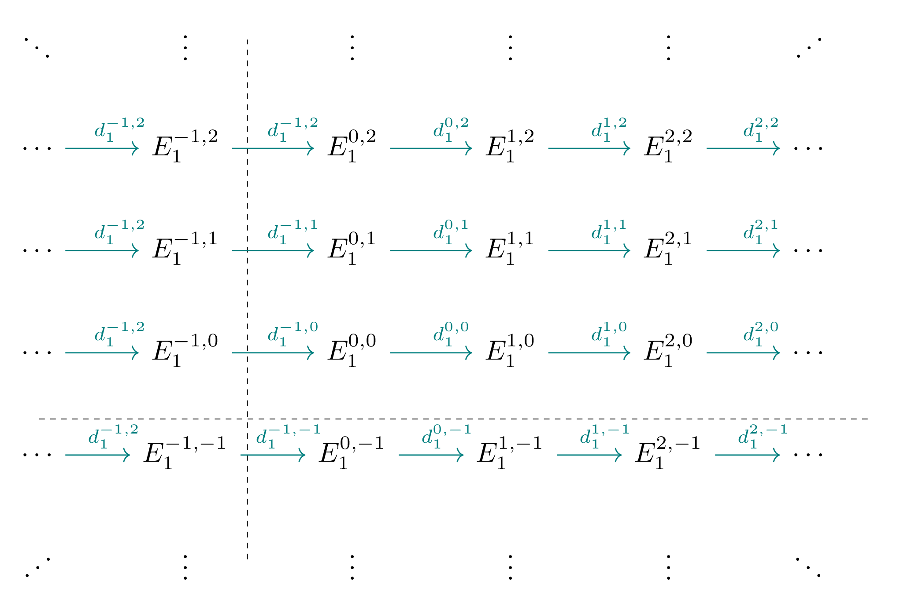
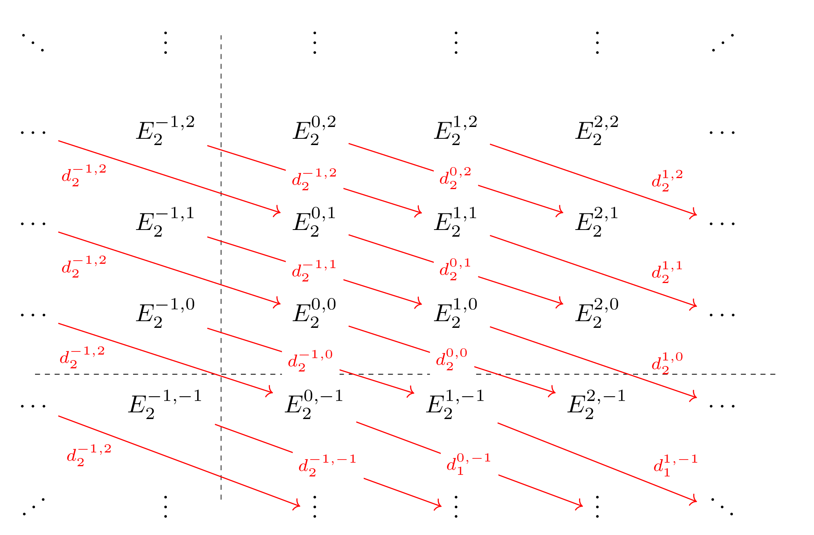
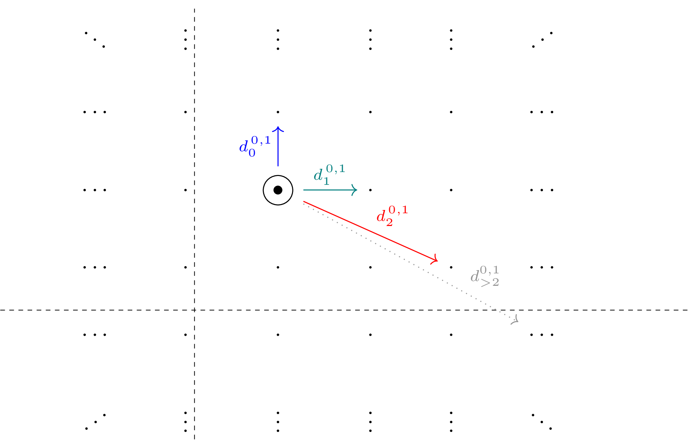
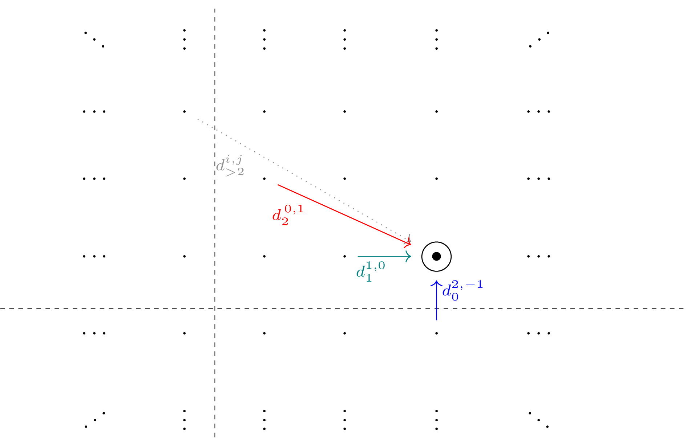

Spectral Sequences
The Purpose of a Spectral Sequence
Throughout this section, we will be considering $R\dash$modules over some fixed ring $R$, and we will try to use cohomological indexing wherever possible so that $H^n(\dash)$ denotes taking the $n\dash$th cohomology.
Broadly speaking, a spectral sequence is a tool from homological algebra that extends the notion of an exact sequence to more complicated situations in which a number of long exact sequences interact in nontrivial ways. A situation such as this carries an inordinate amount of data, and a spectral sequence provides a way of compressing this data in such a way that makes computations with it feasible. They were first introduced by Jean Leray around 1946, a French mathematician whose specialty was primarily in differential equations. However, around 1940 he was captured and sent to a prisoner-of-war camp in Austria, where he remained imprisoned until 1945. Fearing that his expertise would be used for wartime efforts, he turned his attention to Topology and formulated sheaf theory. He soon found himself faced with a need to compute a variant of sheaf cohomology, which gave rise to the first spectral sequence (often referred to as the Leray Spectral Sequence). These were soon adapted to a number of different situations, most of which were eventually found to be special cases of the Grothendieck spectral sequence which expresses how derived functors behave under composition.
For the purposes of this paper, we will primarily make use of the Serre spectral sequence as a computational tool that generalizes the notion of a long exact sequence in order to study the cohomology groups of a space $X$, which we will denote $H^n(X)$. They are a particularly powerful tool in this regard, as they can often also be used to compute not only the cohomology groups, but also its structure as a graded ring, given by $H^*(X) = \bigoplus_{i\geq 0} H^i(X)$ equipped with the cup product
As is often the case with long exact sequences, we will often be interested in “two out of three” situations - that is, we will be studying space $A$ with two associated spaces $B$ and $C$ for which the cohomology is either known or simply easier to compute. A spectral sequence will then provide way of relating the cohomology rings $H^*(A)$, $H^*(B)$, and $H^*(C)$, allowing information about any two of the three spaces to be leveraged to yield information about the third. In particularly nice situations, the cohomology of the two associated spaces may entirely characterize the cohomology of the third, although as we will soon see, this will not always be the case due to the presence of extension and lifting problems.
This technique becomes especially powerful when combined with the tools of homotopy theory - in particular, the Hurewicz theorem provides a bridge between homotopy and homology, and with some orchestration, one can set up a situation in which any desired homotopy group $\pi_i(X)$ will be isomorphic to $H_i(Y)$ for some potentially complicated space $Y$. Applying a spectral sequence to compute the cohomology of $Y$ thus provides a method (of which there seem to be very few!) of algebraically computing the homotopy groups of $X$, which can be continued inductively to compute $\pi_{i+k}(X)$ for any $k$. In practice, this introduces a nontrivial amount of complexity at each step, and the requisite computations can quickly become quite difficult, but one can often glean valuable information at early stages, and often information that is hard to ascertain by other means. In their full generality, spectral sequences can used to yield relatively easy proofs of theorems such as the commutativity of $\tor_R^i(\wait, \wait)$ over $R\dash$modules, or that various cohomology theories yield isomorphic results.
Algebraic Preliminaries
Definitions: Homological Algebra
We first set up some preliminary algebraic definitions. Throughout this section, we will work over the category $\mathbf{R\dash Mod}$ of left modules over some fixed ring $R$, and we will implicitly assume all indexing is cohomological.
A monoid is a set $S$ with an associative binary operation, which we will denote $+$, along with an identity element, and is thus characterized by the data $(S, +)$. A monoid can be thought of as a group in which elements need not necessarily have inverses, and common examples include $\NN$ and $\ZZ$. For our purposes, they will serve as the most general algebraic structure that can be used as to indexing in a sensible way.
A complex of modules with respect to a monoid $S$ is defined to be a collection of modules
where $S$ is thought of as an indexing set. A complex is said to be $S\dash$graded if it admits a decomposition
that “respects the grading” in the sense that the decomposition satisfies $A^i A^j \subseteq A^{i+j}$, where $A^i A^j = \theset{a\cdot b \mid a \in A^i, b\in A^j}$ and $(\cdot)$ denotes multiplication within the module $A^\wait$.
Unless otherwise specified, one often implicitly takes $S=\NN$ or $\ZZ$ and simply refers to the corresponding complexes as graded complexes.
Because the most common situation is $S=\ZZ$, elements $i\in S$ are referred to as degrees or indices. Each module $A^i$ is thus referred to as the "$i$th graded piece" of the complex $A^\wait$, and elements in $A^i$ are denoted "homogeneous elements of degree $i$".
It is also common to take $S = \ZZ^2$, and the resulting $\ZZ^2\dash$graded complex $A^{\wait, \wait}$ is denoted a bigraded complex or a double complex. Such complexes can equivalently be thought of as a family of modules $A^{i, j}$, each characterized by a pair of indices $(i, j)$ denoted its bidegree, which are often depicted as elements on an integer lattice:

Given a graded complex $A^\wait$, one may also consider maps between the graded pieces. which take the form $d^s: A^s \to A^t$. Without loss of generality, one can assume $s \leq t$ and setting $i = t-s$, this may be rewritten as $d^s: A^s \to A^{s+i}$.We thus define the degree of $d$ to be the quantity $i$, or occasionally it is said that $d$ "moves along the grading by $i$". Such complexes are often depicted on a 2 dimensional integer lattice, as in the following image:
Similarly, one may consider maps within a double complex of the form
in which case we refer to the pair $(i,j)$ as the bidegree of $d$.
Note that given any double complex $A^{\wait, \wait}$, one can reduce the dimensionality of the grading by forming a new $\ZZ\dash$graded complex $B^{\wait}$ defined by
With this in mind, an element $A^{i,j}$ with bidegree $(i, j)$ is said to have total degree equal to $i+j$.
If a graded complex is equipped with a map
One can then define a chain complex of $R\dash$modules to be differential $\ZZ\dash$graded complex with a differential of degree 1. In other words, it is a collection of modules along with maps
for which the $d^i$ increase the grading by 1 and satisfy $d^{i+1} \circ d^i = 0$. One often writes this as a sequence
The data of a chain complex as is often abbreviated as a pair $(A^\wait, d)$ satisfying $d^2 = 0$.
Given a chain complex $(A^\wait, d)$, one can define the homology of the complex at the $i$th position by taking kernels module images with respect to the differentials:
Note that the notion of a chain complex generalizes the notion of an exact sequence – in fact, an exact sequence is exactly a chain complex for which the homology vanishes everywhere, so that $h^i(A^\wait) = 0$ for every $i$. Such chain complexes are said to be acyclic, and one can think of the homology of a chain complex as a measurement of how far the sequence of modules deviates from exactness.
With these definitions in place, one can define higher dimensional generalizations of chain complexes by altering the index set. We will primarily be concerned with differential graded double complexes, which is a shorthand for differential $\ZZ^2\dash$graded complexes. These are collections of modules equipped with differentials of a given bidegree $(s,t)$
satisfying $d^2 = 0$.
Just as with chain complexes, one can define the homology of a differential graded double complex at the $(i,j)$ position by taking kernels modulo images with respect to the given differential:
With these definitions in place, it becomes easy to state what a spectral sequence is and deduce some of the immediate consequences of its definition:
Definition: Spectral Sequence
A cohomological spectral sequence is a sequence of differential graded double complexes $\theset{E_r^{\wait, \wait} \mid r \in \NN}$, each equipped with a differential of bidegree $(r, -r+1)$.
Explicitly, it is the data of a sequence of $\ZZ^2\dash$graded modules
equipped with differentials of bidegree $(r, -r+1)$
that move along the $(i,j)$ grading and satisfy
The index $r$ is often referred to as a page of the spectral sequence, and for $r\geq 0$, we inductively define $E_{r+1}^{i,j} = h(E_r^{i,j})$. Explicitly, we have
so that the element at the $(i,j)$ position on page $r+1$ is obtained by taking the homology at the $(i,j)$ position on page $r$ with respect to the given differentials.
In the literature, one often suppresses indices outside of explicit computations and writes $(E_r, d_r)$ to denote the $r$th page with its corresponding differential and $E_{r+1} = h(E_r)$ to denote that each page is obtained by taking the homology of the previous page.
$\endef$
Although this definition makes the structure explicit, the abundance of indices needed to describe such a thing can obscure the relative simplicity of the setup. As with general double complexes, one often depicts each page of a spectral sequence as a collection of objects position on a planar lattice, broken up into quadrants based on the signs of the indices. The $i$ component is generally taken to be horizontal coordinate, and the $j$ to be the vertical.
Note that given any differential graded double complex $\theset{(A^{i, j}, d^{i,j}) \mid (i, j) \in \ZZ^2})$, there is naturally an associated spectral sequence obtained by setting $E_0^{i, j} = A^{i,j}$ and inductively letting $E_r = h(E_{r-1})$ for $r \geq 1$. Conversely, we can think of the $E_0^{\wait, \wait}$ as a differential graded double complex in its own right.
Spectral sequences are perhaps best understood through example, and so it is worth explicitly enumerating the elements and differentials on the first few pages of generic sequence.
In general, elements on the zeroth page of a spectral sequence, corresponding to $r=0$ will have differentials of bidegree $(0, 1)$ and will thus move the grading up along the vertical direction, and thus $E_0^{\wait, \wait}$ will have the following form:

Similarly, taking $r=1$ to obtain to first page will yield differentials of bidegree $(1, 0)$ which will move the grading forward horizontally, giving $E_1^{\wait, \wait}$ the following form:

And taking $r=2$ to obtain the second page yields differentials of bidegree $(2, -1)$, giving $E_2^{\wait, \wait}$ the following form:

When working with spectral sequences, it is often the case that one is interested in what happens to a single entry as one steps along pages, and so it is also worth observing the pattern of differentials emanating from a single point:

And so we see that differentials whose source is at coordinate $(p, q)$ tend to have targets having total degree $(p+q)+1$, forming a diagonal line above the element in question. In this image, we have $(p,q) = (0,1)$, and so we expect differentials to hit elements of total degree $(0+1)+1 = 2$ as we move through the pages. This is indeed the case, as the targets of the corresponding differentials are $E_0^{0,2}, E_1^{1,1}, E_2^{2,0}$ respectively on each page.
In a dual fashion, given a single entry, one is often interested in which differentials target that entry:

And so we see that given an entry at coordinate $(p, q)$, the differentials that target it tend to come from elements of total degree $(p+q)-1$, lying on a diagonal line below the element we are interested in. In this image, we are looking at the coordinate $(p, q) = (2, 0)$, and so we expect differentials to come from elements of total degree $(2+0)-1 = 1$. This is indeed the case, as we find that the sources of the corresponding differentials come from $E_0^{2,-1}, E_1^{1,0}, E_0^{0,1}$ and so on.
A chain complex $(C^\wait, d)$ is said to bounded if there exists some $N$ such that for all $n$ with $|n| \geq N$, $C^n = 0$, or equivalently $C^i = 0$ for all but finitely many values of $i$. For a double complex $(A^{\wait, \wait}, d)$ we can similarly define a notion of boundedness by requiring that $A^{i, j} = 0$ for all but finitely many pairs $(i, j) \in \ZZ^2$.
With this in mind, it becomes clear that if $E_0^{\wait, \wait}$ is bounded, then it is supported on a finite subset of $\ZZ^2$ and one can thus uniformly pick an $N$ such that for all $r > N$, every element $E_r^{i, j}$ with total degree $i+j > N$ will be zero.
As a consequence, for all $r\geq N$, all differentials entering any element will come from 0 objects, and all differentials emanating from that element will target 0 objects as well.
Explicitly, for any given coordinate $(p, q)$ of interest, we can use the fact that every differential has bidegree $(r,-r+1)$ to identify both the incoming differentials
as well as the outgoing differentials
Lemma: If $E_r^{i, j} = 0$ for any $r$, then it is zero on every subsequent page and we have $E_{r+k}^{i, j} = 0$ for every $k$.
This follows from the fact that the incoming differential
has codomain zero and thus $\im\left(d_r^{i-r,j-r+1} \right) = 0$. Similarly,
has domain zero and thus $\ker\left(d_r^{i,j}\right) = 0$. One then computes
which establishes the lemma inductively. $\qed$
With this lemma in hand, we can now prove the following theorem:
[Define convergence here]
Theorem: A bounded spectral sequence converges.
Since the complex is bounded, we pick a uniform $N$ large enough such that $r-1 > N$ implies that every $E_0^{i, j}$ with either $|i| \geq r-1$ or $|j| \geq r-1$ is zero.
Then fix a coordinate $(i,j)$, where without loss of generality we assume that $i\geq 0$ and $j\geq 0$, and consider what happens at the $r$th page. We can use the fact that every differential has bidegree $(r,-r+1)$ to explicitly identify both the incoming differentials
as well as the outgoing differentials
However, in the first case, we have $j+r-1 \geq r-1$ and thus $E_r^{i-r, j+r-1} = 0$ by our choice of $r$. Similarly, in the second case we have $i+r \geq r$ and so $E_r^{i+r, j-r+1} = 0$ as well, and thus the situation is as follows
and we find that
In other words, for every coordinate $(i, j)$, there exists a page $r_{ij}$ at which the entry stabilizes and does not change on any page thereafter.
If the complex is bounded, one can then take $R = \max \theset{r_{ij} \mid E_0^{i,j} \neq 0}$ to obtain a finite page $R$ after which all entries stabilize. When this happens, one defines $E_\infty^{i,j} = E_R^{i,j}$ and the spectral sequence is said to converge to $E_\infty$, which is often written as
When such a page $R$ exists, the sequence is also sometimes said to collapse at page $R$.
We will thus primarily be interested in bounded spectral sequences, as the limiting object $E_\infty$ will not only provide valuable information, but it will often be the case that the spectral sequence collapses within the first few pages – in nearly all of the cases we consider here, the sequences will collapse at $E_2$ or $E_3$, and sometimes even earlier.
Many of the spectral sequences we will encounter can be indexed such that all elements conveniently lie within the quadrant $i \geq 0, j\geq 0$. Such sequences are referred to as first quadrant spectral sequences.
Construction from a Filtration
Although we have asserted that spectral sequences exist, it is perhaps not yet clear how such sequences come about. Spectral sequences are generally constructed in one of two equivalent ways: as either a structure that arises from a filtration on a chain complex, or through the formalism of exact couples.
Although the latter approach allows slightly more generalization, this comes at the price of increased opacity. Since both yield the same algebraic statements, we will opt to use the filtration approach instead.
We start off with a simple goal in mind: suppose we are given a chain complex $(C^{\wait}, d^\wait)$ with a differential of degree 1, and we are interested in finding its homology ring $h^*(C^\wait)$.
Given an algebraic object such as a topological space or an $R\dash$module $A$, an ascending filtration on $A$ is a sequence of subobjects indexed by $\NN$, $\theset{A_i}_{i\in \NN}$, satisfying $i \leq j \implies A_i \subseteq A_j$ and $\bigcup_{i\in \NN}A_i = A$. In many cases, $A_0$ is taken to be the empty set, and the filtration is often written as a chain
It is also helpful to introduce the notation $F^i A = A_i$ to help track indices, yielding
A descending filtration on $A$ is defined dually, where one instead requires $i \leq j \implies A_j \subseteq A_i$, $\bigcap_{i\in \NN} A_i = \emptyset$, and defines $A_0 = A$. This is also written as the chain
where $F^i A = A_i$ is defined similarly yielding
A good example of a descending filtration to keep in mind is filtering a finite-dimensional CW-complex $X$, where we define $F^iX = X^{(i)}$ to be the $i$-skeleton of $X$. Supposing that $X$ is $n\dash$dimensional, one can set $F^iX = 0$ for $i\geq n$ to obtain a bounded filtration of the following form
In both cases, an object $A$ with a filtration $F$ is often abbreviated $F^\wait A$.
Given a descending filtration, one can define its associated graded object $G^\wait A$ as
which yields the short exact sequence
A filtered chain complex is a chain complex $(C^\wait, d)$ along with a filtration on each $n$-chain $F^\wait C_n$, such that $d^n(F^i C_n) \subseteq F^iC_{n+1}$ and the differential preserves the filtration.
Back to our original problem of computing $h^*(C^\wait)$, the method we will use will be to introduce a descending filtration $F^\wait(C^\wait)$ on the complex, usually assumed to be of finite length and written
With such a filtration in hand, we then take the associated graded chain complex
As usual, one can define the homology of $C^\wait$ by taking kernels modulo images on the original chain complex, yielding $h^i(C^\wait) = \frac{\ker d^i}{\im d^{i-1}}$. However, since $F^pC^\wait \subseteq C^\wait$ and each differential $d^i:C^i \to C^{i-1}$ is defined on $C^\wait$, we can restrict these differentials to obtain differentials on the filtered complex
and …
This allows us to define the cohomology of the associated graded complex,
At this point, it is worth noting that a priori, we do not have any reason to suspect that the cohomology of the associated graded complex will be related to the cohomology of the complex we started with. Generically, forming the associated graded complex is a rather destructive process – for example, given an arbitrary $R\dash$module $M$ with a filtration $F^\wait M$, the naive hope might be that $M \cong \bigoplus G^p M$. However, this is generally false – one is only guaranteed that there exists a collection of short exact sequences
and thus this hope will only hold if and only if each short exact sequence splits. This may occur if each module is a vector space, or more generally if all of the constituent modules are free or $R$ is a principle ideal domain. Moreover, even if these sequences split, there may be multiple non-isomorphic extensions.
Definition: Associated Graded
Results
We are thus in a position to state a theorem that will serve as our main computational tool.
Theorem: The Serre Spectral Sequence
Let $F \to E \to B$ be a fibration, where $B$ is the base space, $E$ is the total space, and $F$ is the fiber. Then there exists a convergent spectral sequence
equipped with a differential of bigrade $(r, -r+1)$, which collapses at the second page and converges to the total cohomology of $E$ – that is, the associated graded complex of the total cohomology is given by
Recovering the Cohomology
There is a decreasing filtration of length $k$ given by
along with a collection of short exact sequences of the following form:
Supposing for instance that all of the modules involved are in fact free groups, each short exact sequence will split and we will have $A^i \cong A^{i-1} \oplus E^{i, n-i}$. Continuing inductively would yield
and thus in this instance, the cohomology of the total space $H^n(E)$ can be recovered from its associated graded pieces.